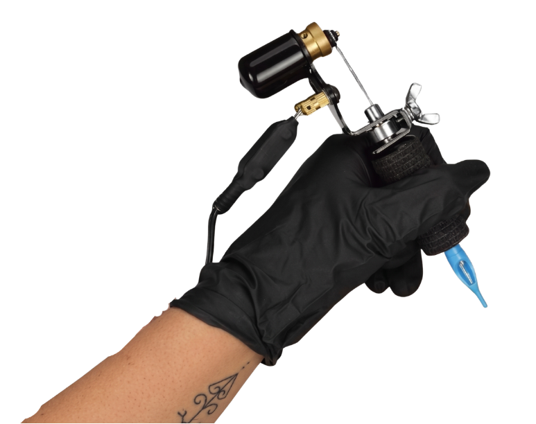
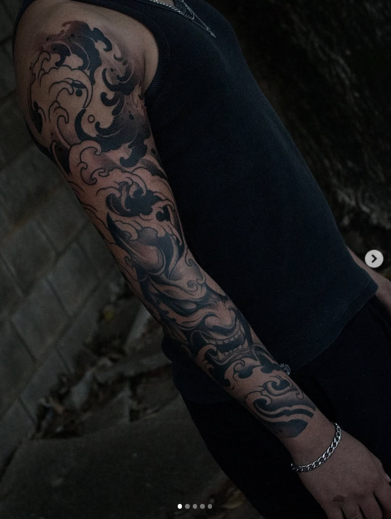
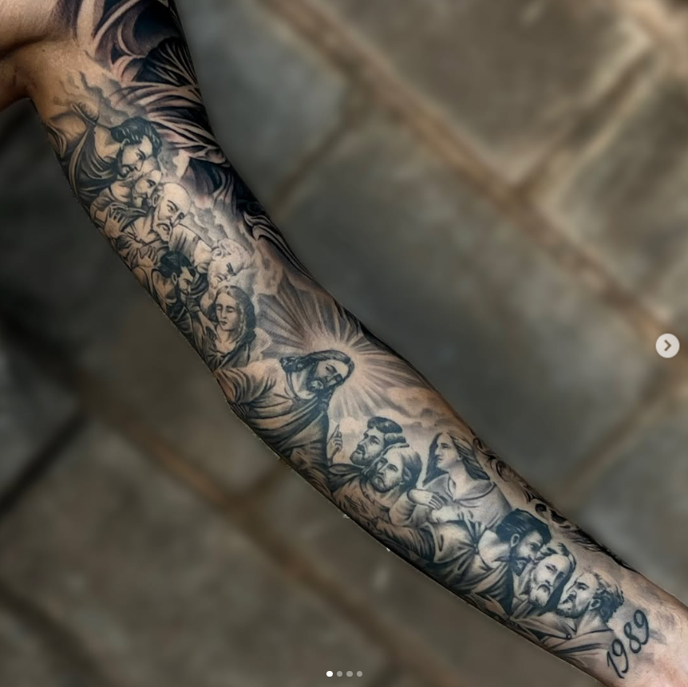
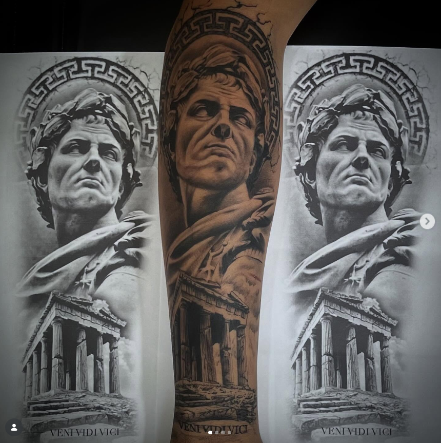
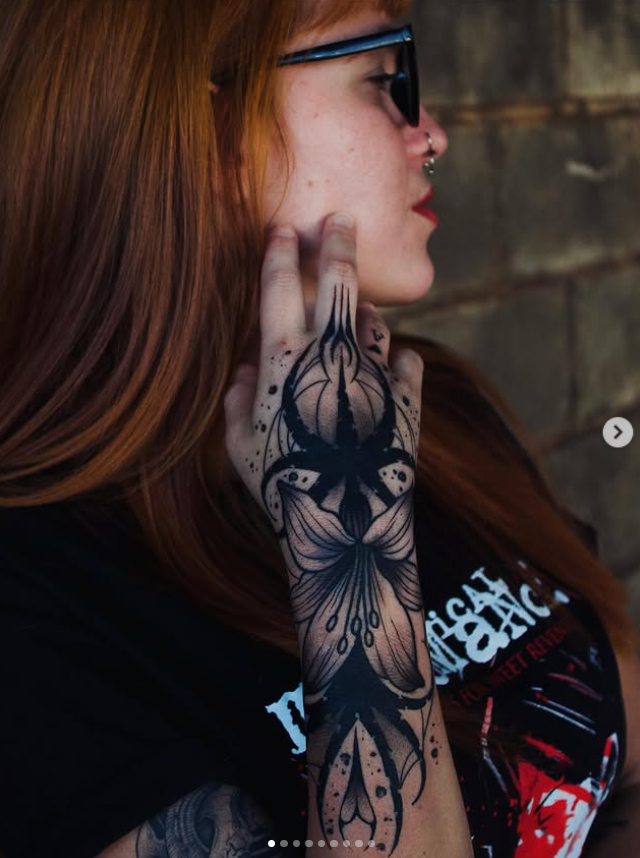

Transformando suas ideias em arte na pele com segurança e precisão.
Solicitar Orçamento
Prazer, eu sou o Wello! Tatuador há 5 anos, apaixonado por transformar ideias, histórias e sentimentos em arte permanente na pele.
Se tem uma coisa que define o meu trabalho é o equilíbrio entre a resenha leve e o profissionalismo impecável. Quem senta na minha cadeira sabe que a sessão vai ser acompanhada de uma boa conversa, risadas e uma energia super positiva, porque acredito que fazer uma tattoo precisa ser uma experiência incrível do início ao fim.
Ao mesmo tempo, sou extremamente metódico e detalhista quando o assunto é o meu ofício. Prezo muito por uma experiência segura e tranquila para você. Trabalho com um padrão cuidadoso de limpeza, escolho materiais premium e organizo cada detalhe da bancada com toda a atenção que você merece. Cada traço, cada sombra e cada aplicação são planejados minuciosamente para garantir que a sua tatuagem cicatrize perfeita e dure para a vida toda.
O seu bem-estar é a minha prioridade. Seja a sua primeira tatuagem ou mais uma para a coleção, eu faço questão de alinhar cada detalhe no projeto, respeitar o seu tempo, tirar todas as suas dúvidas e garantir que você se sinta 100% confortável e seguro do primeiro café ao último curativo.
Vem tomar um café no estúdio, trocar uma ideia sobre o seu projeto e bora riscar!
Estilo marcante que utiliza exclusivamente tinta preta. Trabalha com altos contrastes, preenchimentos sólidos, sombras trabalhadas e padrões geométricos ou orgânicos únicos na pele.

Traços finos, precisos e delicados. Ideal para quem busca um design elegante, minimalista e discreto, mantendo a clareza dos detalhes mesmo em tamanhos menores.

Técnica focada em reproduzir fotos e imagens reais na pele com riqueza de detalhes, profundidade, texturas e volumetria de sombras impressionantes.

Artes criadas do zero exclusivamente para você. Unindo referências do cliente com a identidade visual única do Wello para criar uma tatuagem 100% exclusiva.

Atendimento exclusivo com hora marcada para garantir o seu conforto e privacidade total durante a sessão.
Entre em contato diretamente para trocar uma ideia sobre sua próxima tattoo.
Chamar no WhatsApp